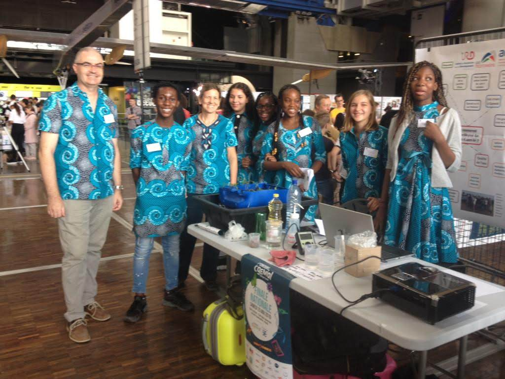
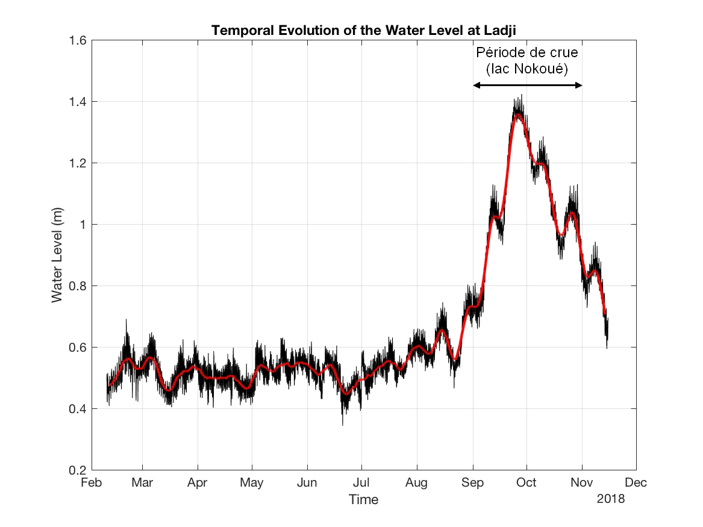
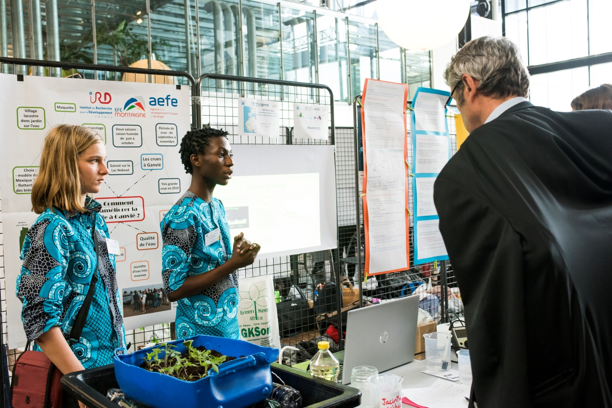
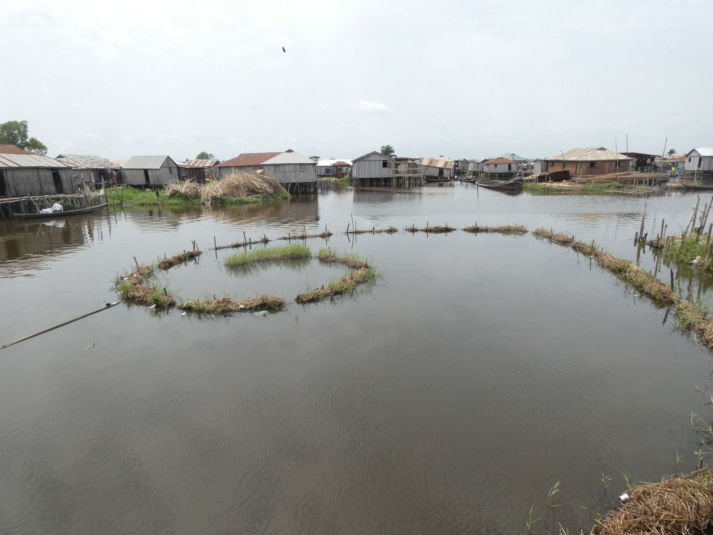
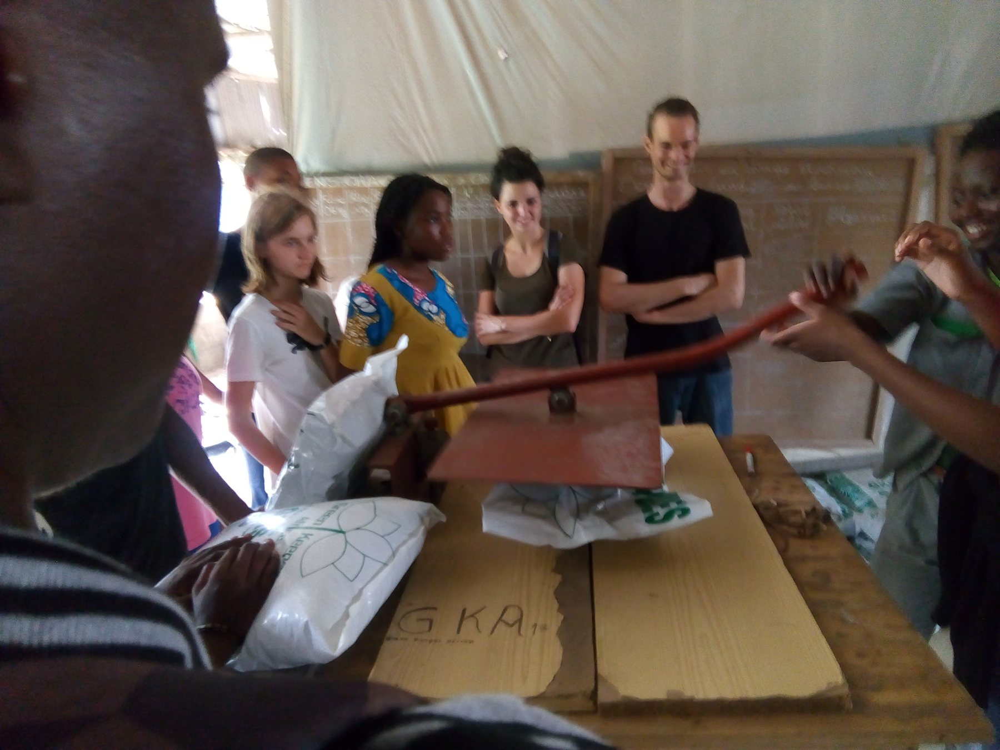

CGénial 2019 Competition · EFE Montaigne · Partners: IRD & Green Keeper Africa
Environmental engineering for the stilt village of Ganvié
A team science and engineering initiative aimed at adapting housing in Ganvié to seasonal flooding on Lake Nokoué. Spanning community surveys, laboratory testing, and physical prototyping, we designed integrated water and waste-management solutions.

Project structure
Organising the investigation across four technical workstreams
In Ganvié—a historic stilt community on Lake Nokoué in Benin—annual floods and seasonal water-quality swings impact housing durability, freshwater access, fisheries, and public health. Developed within the EFE Montaigne science club (Cotonou) for the 2019 CGénial competition, the project sought practical adaptations tailored to local constraints.
From November to May, our team worked across four interconnected tracks:
- Hydrology, rainfall patterns, and rooftop rainwater harvesting (my primary track)
- Physico-chemical water and soil quality analysis
- Phytoremediation and invasive water hyacinth assessment
- Modular floating gardens and organic composting
Fieldwork & measurements
Analysing flood dynamics and lagoon salinity
We conducted field visits in Ganvié and Sô-Ava to interview residents and document daily challenges during peak flood periods.
Working alongside researchers from the French National Research Institute for Sustainable Development (IRD), we cross-referenced Cotonou rainfall records with hydrometric water-level logs from Ladji—linking seasonal surges to northern tributaries (the Ouémé and Sô rivers) and tracking the lake’s shift from brackish dry-season water to freshwater flood conditions that trigger water hyacinth blooms.

In the lab, we used calibration curves and conductivity measurements to quantify lagoon salinity—measuring 13 g/L on a sample collected on 9 February 2019—supplemented by microscopy observations.
Technical concepts
Designing four household-scale engineering solutions
Informed by resident interviews and discussions with Beninese circular-economy company Green Keeper Africa, we evaluated four solutions adapted to stilt dwellings:
- Rooftop rainwater harvesting: sized collectible volumes from roof catchment area and local rainfall while addressing waterproofing and gutter slope constraints.
- Phytoremediation wastewater treatment: assessed a gravity-fed lagoon system using water hyacinth roots—inspired by the Songhaï Centre in Porto-Novo—evaluating hydraulic head and cost constraints.
- Circular valorisation of invasive water hyacinth: explored conversion into organic compost or bio-based industrial oil sorbents based on Green Keeper Africa’s process.
- Modular floating gardens: built a scale prototype supported by recycled plastic drums, sized to serve five households and fertilised with water-hyacinth compost.
CGénial 2019 Competition
International category winner and national finalist
The project won first place in the International Projects category of the 2019 CGénial competition (AEFE network) and advanced to the national finals at the Cité des Sciences et de l’Industrie in Paris.

Field photography
The environment and community dialogue behind the project




Deliverables
Deliverables included a scientific dossier, analysed rainfall and hydrometric datasets, a floating-garden prototype, and a national final defence. Detailed documentation is available upon request.
Request the project dossier